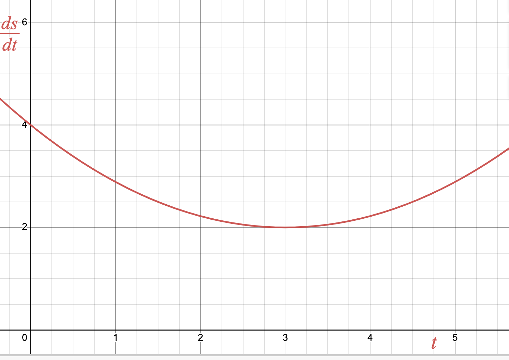
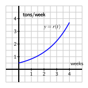

How does the area between a velocity curve and the horizontal time axis over a particular interval give us information about position?
How can we use a Riemann sum to estimate the area between a given curve and the horizontal axis over a particular interval?
What are the differences among left, right, and middle Riemann sums?
How can we write Riemann sums in an abbreviated form?
In Chapter 4, a general goal has been to describe how a continuous-time dynamical system is changing using a differential equation that models that system. In this section, we will see there is a connection between describing change in position and computing area under a velocity curve. We will then begin discussing how we go about computing areas under curves.
Warm-Up4.3.1.
Let \(s(t)\) be the position of an object (in feet) relative to its starting position after \(t\) seconds. Suppose we know \(s(t)\) is changing according to the differential equation \(\frac{ds}{dt}=5\text{.}\)
What is a common name for the quantity \(\frac{ds}{dt}\text{?}\) What are the units of \(\frac{ds}{dt}\text{?}\)
Compute the distance the object has traveled after \(10\) seconds.
Sketch a graph of the differential equation: \(\frac{ds}{dt}\) on the vertical axis and \(t\) on the horizontal axis.
Compute the area under the \(\frac{ds}{dt}\) curve and above the \(t\)-axis on the interval \([0,10]\text{.}\) How does this area relate to your answer in part 2? Write one careful sentence explaining why you think your answers relate this way.
Suppose instead the differential equation describing \(s\) is \(\frac{ds}{dt}=-5\text{.}\) How does this change your answers to the previous questions? What is the physical difference between these two differential equations?
Subsection4.3.1Areas, Distance, and Displacement
In Warm-Up 4.3.1, we learned that if an object moves with positive velocity \(v = \frac{ds}{dt}\text{,}\) the area between \(y = v(t)\) and the \(t\)-axis over a given time interval tells us the distance traveled by the object over that time period. If \(v(t)\) is sometimes negative and we view the area of any region below the \(t\)-axis as having an associated negative sign, then the sum of these signed areas tells us the moving object’s change in position, or displacement over a given time interval.
For instance, for the velocity function given in Figure 4.3.1, if the areas of shaded regions are \(A_1\text{,}\)\(A_2\text{,}\) and \(A_3\) as labeled, then the total distance \(D\) traveled by the moving object on \([a,b]\) is
\begin{equation*}
D = A_1 + A_2 + A_3\text{,}
\end{equation*}
while the total change in the object’s position (or displacement) on \([a,b]\) is
Figure4.3.1.A velocity function that is sometimes negative.
Because the motion is in the negative direction on the interval where \(v(t) \lt 0\text{,}\) we subtract \(A_2\) to determine the object’s total change in position.
Of course, finding \(D\) and \(s(b)-s(a)\) for the graph in Figure 4.3.1 presumes that we can actually find the areas \(A_1\text{,}\)\(A_2\text{,}\) and \(A_3\text{.}\) So far, we have worked with velocity functions that were constant, so that the area bounded by the velocity function and the horizontal axis is the area of a rectangle, and we can find the area exactly. If the velocity function were any linear function, we could similarly compute areas of triangles to find the area exactly. But when the curve bounds a region that is not a familiar geometric shape, we cannot find its area exactly. Indeed, this is one of our biggest goals in Chapter 4: to learn how to find the exact area bounded between a curve and the horizontal axis for as many different types of functions as possible.
In Activity 4.3.2, we will see how we might approximate the area under a nonlinear velocity function using rectangles.
Activity4.3.2.
A person walking along a straight path has her velocity in miles per hour at time \(t\) given by the function \(v(t) = 0.25t^3-1.5t^2+3t+0.25\text{,}\) for times in the interval \(0 \le t \le 2\text{.}\) The graph of this function is also given in each of the three diagrams in Figure 4.3.2.
Figure4.3.2.Three approaches to estimating the area under \(y = v(t)\) on the interval \([0,2]\text{.}\)
Note that in each diagram, we use four rectangles to estimate the area under \(y = v(t)\) on the interval \([0,2]\text{,}\) but the method by which the four rectangles’ respective heights are decided varies among the three individual graphs.
How are the heights of rectangles in the left-most diagram being chosen? Explain, and hence determine the value of
Let \(D\) be the total distance the person traveled on \([0,2]\text{.}\) Of the estimates \(S\text{,}\)\(T\text{,}\) and \(U\text{,}\)
which do you think is clearly an over-estimate of \(D\text{?}\)
which do you think is clearly an under-estimate of \(D\text{?}\)
which do you think is the best approximation of \(D\text{?}\)
Subsection4.3.2Sigma Notation
We have used sums of areas of rectangles to approximate the area under a curve. Intuitively, we expect that using a larger number of thinner rectangles will provide a better estimate for the area. Consequently, we anticipate dealing with sums of a large number of terms. To do so, we introduce sigma notation, named for the Greek letter \(\Sigma\text{,}\) which is the capital letter \(S\) in the Greek alphabet.
We read the symbol \(\sum_{k=1}^{100} k\) as “the sum from \(k\) equals 1 to 100 of \(k\text{.}\)” The variable \(k\) is called the index of summation, and any letter can be used for this variable. The pattern in the terms of the sum is denoted by a function of the index; for example,
Sigma notation allows us to vary easily the function being used to describe the terms in the sum, and to adjust the number of terms in the sum simply by changing the value of \(n\text{.}\) We test our understanding of this new notation in the following activity.
Activity4.3.3.
For each sum written in sigma notation, write the sum long-hand and evaluate the sum to find its value. For each sum written in expanded form, write the sum in sigma notation.
\(\displaystyle \sum_{k=1}^{5} (k^2 + 2)\)
\(\displaystyle \sum_{i=3}^{6} (2i-1)\)
\(\displaystyle 3 + 7 + 11 + 15 + \cdots + 27\)
\(\displaystyle 4 + 8 + 16 + 32 + \cdots + 256\)
\(\displaystyle \sum_{i=1}^{6} \frac{1}{2^i}\)
Subsection4.3.3Riemann Sums
When a moving body has a positive velocity function \(y = v(t)\) on a given interval \([a,b]\text{,}\) the area under the curve over the interval gives the total distance the body travels on \([a,b]\text{.}\) We are also interested in finding the exact area bounded by \(y = f(x)\) on an interval \([a,b]\text{,}\) regardless of the meaning or context of the function \(f\text{.}\) For now, we continue to focus on finding an accurate estimate of this area by using a sum of the areas of rectangles. Unless otherwise indicated, we assume that \(f\) is continuous and non-negative on \([a,b]\text{.}\)
The first choice we make in such an approximation is the number of rectangles.
Figure4.3.3.Subdividing the interval \([a,b]\) into \(n\) subintervals of equal length \(\Delta x\text{.}\)
If we desire \(n\) rectangles of equal width to subdivide the interval \([a,b]\text{,}\) then each rectangle must have width \(\Delta x = \frac{b-a}{n}\text{.}\) We let \(x_0 = a\text{,}\)\(x_n = b\text{,}\) and define \(x_{i} = a + i\Delta x\text{,}\) so that \(x_1 = x_0 + \Delta x\text{,}\)\(x_2 = x_0 + 2 \Delta x\text{,}\) and so on, as pictured in Figure 4.3.3.
We use each subinterval \([x_i, x_{i+1}]\) as the base of a rectangle, and next choose the height of the rectangle on that subinterval. There are three standard choices: we can use the left endpoint of each subinterval, the right endpoint of each subinterval, or the midpoint of each. These are precisely the options encountered in Activity 4.3.2 and seen in Figure 4.3.2. We next explore how these choices can be described in sigma notation.
Consider an arbitrary positive function \(f\) on \([a,b]\) with the interval subdivided as shown in Figure 4.3.3, and choose to use left endpoints. Then on each interval \([x_{i}, x_{i+1}]\text{,}\) the area of the rectangle formed is given by
Figure4.3.4.Subdividing the interval \([a,b]\) into \(n\) subintervals of equal length \(\Delta x\) and approximating the area under \(y = f(x)\) over \([a,b]\) using left rectangles.
If we let \(L_n\) denote the sum of the areas of these rectangles, we see that
Note that since the index of summation begins at \(0\) and ends at \(n-1\text{,}\) there are indeed \(n\) terms in this sum. We call \(L_n\) the left Riemann sum for the function \(f\) on the interval \([a,b]\) using \(n\) rectangles.
To see how the Riemann sums for right endpoints and midpoints are constructed, we consider Figure 4.3.5.
Figure4.3.5.Riemann sums using right endpoints and midpoints.
For the sum with right endpoints, we see that the area of the rectangle on an arbitrary interval \([x_i, x_{i+1}]\) is given by \(B_{i+1} = f(x_{i+1}) \cdot \Delta x\text{,}\) and that the sum of all such areas of rectangles is given by
so that \(\overline{x}_{i+1}\) is the midpoint of the interval \([x_i, x_{i+1}]\text{.}\) For instance, for the rectangle with area \(C_1\) in Figure 4.3.5, we now have
and we say that \(M_n\) is the middle Riemann sum for \(f\) on \([a,b]\) using \(n\) rectangles.
Thus, we have two variables to explore: the number of rectangles and the height of each rectangle. We can explore these choices dynamically using the interactive provided below.
By moving the slider for \(N\text{,}\) we can see how the estimates change using more or less rectangles. By highlighting different types of estimates, we can see how the heights of the rectangles change as we consider left endpoints, midpoints, and right endpoints. As we change both of these variables, we can compare the estimate values to the actual value of the area under the curve.
When \(f(x) \ge 0\) on \([a,b]\text{,}\) each of the Riemann sums \(L_n\text{,}\)\(R_n\text{,}\) and \(M_n\) provides an estimate of the area under the curve \(y = f(x)\) over the interval \([a,b]\text{.}\) We also recall that in the context of a non-negative velocity function \(y = v(t)= \frac{ds}{dt}\text{,}\) the corresponding Riemann sums approximate the distance traveled on \([a,b]\) by a moving object with velocity function \(v\text{.}\)
Activity4.3.4.
Suppose that an object moving along a straight line path has its velocity in feet per second at time \(t\) in seconds given by \(\frac{ds}{dt} = \frac{2}{9}(t-3)^2 + 2\text{.}\)
Use the graph below to illustrate the exact area that will tell you the value of the distance the object traveled on the time interval \(2 \le t \le 5\text{.}\)

Estimate the distance traveled on \([2,5]\) by computing \(L_4\text{,}\)\(R_4\text{,}\) and \(M_4\text{.}\)
For this question, think about an arbitrary function \(f\text{,}\) rather than the particular function given above. If \(f\) is positive and increasing on \([a,b]\text{,}\) will \(L_n\) over-estimate or under-estimate the exact area under \(f\) on \([a,b]\text{?}\) Will \(R_n\) over- or under-estimate the exact area under \(f\) on \([a,b]\text{?}\) Explain.
Subsection4.3.4When the function is sometimes negative
we can of course compute the sum even when \(f\) takes on negative values. We know that when \(f\) is positive on \([a,b]\text{,}\) a Riemann sum estimates the area bounded between \(f\) and the horizontal axis over the interval.
Figure4.3.6.At left and center, two left Riemann sums for a function \(f\) that is sometimes negative; at right, the areas bounded by \(f\) on the interval \([a,d]\text{.}\)
For the function pictured in the first graph of Figure 4.3.6, a left Riemann sum with 12 subintervals over \([a,d]\) is shown. The function is negative on the interval \(b \le x \le c\text{,}\) so at the four left endpoints that fall in \([b,c]\text{,}\) the terms \(f(x_i) \Delta x\) are negative. This means that those four terms in the Riemann sum produce an estimate of the opposite of the area bounded by \(y = f(x)\) and the \(x\)-axis on \([b,c]\text{.}\)
In the middle graph of Figure 4.3.6, we see that by increasing the number of rectangles the approximation of the area (or the opposite of the area) bounded by the curve appears to improve.
In general, any Riemann sum of a continuous function \(f\) on an interval \([a,b]\) approximates the difference between the area that lies above the horizontal axis on \([a,b]\) and under \(f\) and the area that lies below the horizontal axis on \([a,b]\) and above \(f\text{.}\) In the notation of Figure 4.3.6, we may say that
where \(L_{24}\) is the left Riemann sum using 24 subintervals shown in the middle graph. \(A_1\) and \(A_3\) are the areas of the regions where \(f\) is positive, and \(A_2\) is the area where \(f\) is negative. We will call the quantity \(A_1 - A_2 + A_3\) the net signed area bounded by \(f\) over the interval \([a,d]\text{,}\) where by the phrase “signed area” we indicate that we are attaching a minus sign to the areas of regions that fall below the horizontal axis.
Finally, we recall that if the function \(f\) represents the velocity of a moving object, the sum of the areas bounded by the curve tells us the total distance traveled over the relevant time interval, while the net signed area bounded by the curve computes the object’s change in position, or displacement, on the interval.
Activity4.3.5.
Suppose that an object moving along a straight line path has its velocity \(\frac{ds}{dt}\) (in feet per second) at time \(t\) (in seconds) given by
Compute \(R_4\text{,}\) the rigth Riemann sum, with \(4\) rectangles for \(\frac{ds}{dt}\) on the time interval \([1,5]\text{.}\) Be sure to clearly identify the value of \(\Delta t\) as well as the locations of \(t_0\text{,}\)\(t_1\text{,}\)\(\cdots\text{,}\)\(t_4\text{.}\) Use the interactive provided to check your answer, as well as to help you with the remaining questions.
Building on your work in (a), estimate the displacement of the object on the interval \([1,5]\text{.}\)
Building on your work in (a) and (b), estimate the total distance traveled by the object on \([1,5]\text{.}\)
Use the interactive to make a guess as to the exact displacement and the exact total distance traveled by the object on the interval \([1,5]\text{.}\)
Subsection4.3.5Summary
Question4.3.7.
Answer.
Question4.3.8.
Answer.
\(f(x_i^*) \Delta x\)
Question4.3.9.
Answer.
Question4.3.10.
Answer.
\(L_n\text{,}\)\(R_n\text{,}\)\(M_n\text{,}\)
\begin{align*}
L_n = f(x_0) \Delta x + f(x_1) \Delta x + \cdots + f(x_{n-1}) \Delta x \amp= \sum_{i = 0}^{n-1} f(x_i) \Delta x,\\
R_n = f(x_1) \Delta x + f(x_2) \Delta x + \cdots + f(x_{n}) \Delta x \amp= \sum_{i = 1}^{n} f(x_i) \Delta x,\\
M_n = f(\overline{x}_1) \Delta x + f(\overline{x}_2) \Delta x + \cdots + f(\overline{x}_{n}) \Delta x \amp= \sum_{i = 1}^{n} f(\overline{x}_i) \Delta x\text{,}
\end{align*}
\(x_0 = a\text{,}\)\(x_i = a + i\Delta x\text{,}\)\(x_n = b\text{,}\)\(\Delta x = \frac{b-a}{n}\text{.}\)\(\overline{x}_{i} = (x_{i-1} + x_i)/2\text{.}\)
Exercises4.3.6Exercises
1.
Consider the function \(f(x) = 3x + 4\text{.}\)
Compute \(L_4\) and \(R_4\) for \(y=f(x)\) on the interval \([2,5]\text{.}\) Be sure to clearly identify the value of \(\Delta x\text{,}\) as well as the locations of \(x_0, x_1, \ldots, x_4\text{.}\) Include a careful sketch of the function and the corresponding rectangles being used in the sum.
Use your sketch from above to determine whether \(L_4\) is an over or under-estimate. Do the same for \(R_4\text{.}\) Then use a familiar geometric formula to determine the exact value of the area of the region bounded by \(y = f(x)\) and the \(x\)-axis on \([2,5]\) to verify your answers.
Answer.
\(\Delta x = 0.75\text{,}\)\(L_4=40.125\text{,}\)\(R_4 = 46.875\)
\(L_4\) is an underestimate and \(R_4\) is an overestimate of the actual area of \(43.5\)
Assume that \(S\) is a right Riemann sum. For what function \(f\) and what interval \([a,b]\) is \(S\) this function’s Riemann sum? Why?
How does your answer to (a) change if \(S\) is a left Riemann sum? a middle Riemann sum?
Suppose that \(S\) really is a right Riemann sum. What geometric quantity does \(S\) approximate?
Use sigma notation to write a new sum \(R\) that is the right Riemann sum for the same function, but that uses twice as many subintervals as \(S\text{.}\)
Answer.
\(f(x)=x^2+1\) on \([1,3]\)
Left: \(f(x) =x^2 + 1\) on \([1.4,3.4]\)
Middle: \(f(x) =x^2 + 1\) on \([1.2,3.2]\)
The area under the graph of \(x^2+1\) from \(x=1\) to \(x=3\)
\(n=10\text{,}\)\(\Delta x = 0.2\text{,}\)\(R_{10}= \sum_{i=1}^{10} [(1+0.2i)^2 + 1] \cdot 0.2\)
3.
A car traveling along a straight road is braking and its velocity is measured at several different points in time, as given in the following table.
Table4.3.11.Data for the braking car.
seconds, \(t\)
\(0\)
\(0.3\)
\(0.6\)
\(0.9\)
\(1.2\)
\(1.5\)
\(1.8\)
Velocity in ft/sec, \(v(t)\)
\(100\)
\(88\)
\(74\)
\(59\)
\(40\)
\(19\)
\(0\)
Plot the given data on a set of axes with time on the horizontal axis and the velocity on the vertical axis.
Estimate the total distance traveled during the time the car brakes using a middle Riemann sum with 3 subintervals.
Estimate the total distance traveled on \([0,1.8]\) by computing \(L_6\text{,}\)\(R_6\text{,}\) and \(\frac{1}{2}(L_6 + R_6)\text{.}\)
Assuming that \(v(t)\) is always decreasing on \([0,1.8]\text{,}\) which estimate from above do we know is an overestimate of the total distance traveled? Why?
The rate at which pollution escapes a scrubbing process at a manufacturing plant increases over time as filters and other technologies become less effective. For this particular example, assume that the rate of pollution (in tons per week) is given by the function \(r\) that is pictured in Figure 4.3.12.
Use the graph to estimate the value of \(M_4\) on the interval \([0,4]\text{.}\)
What is the meaning of \(M_4\) in terms of the pollution discharged by the plant? (HINT: keep track of the units in your computation of \(M_4\))
Suppose that \(r(t) = 0.5 e^{0.5t}\text{.}\) Use this formula for \(r\) to compute \(L_5\) on \([0,4]\text{.}\)
Determine an over-estimate of the total amount of pollution that can escape the plant during the pictured four week time period using \(4\) rectangles. Explain how you know it is an over-estimate.

Figure4.3.12.The rate, \(r(t)\text{,}\) of pollution in tons per week.